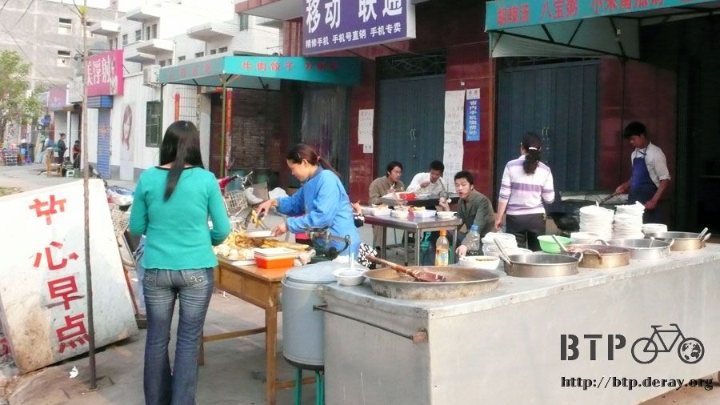
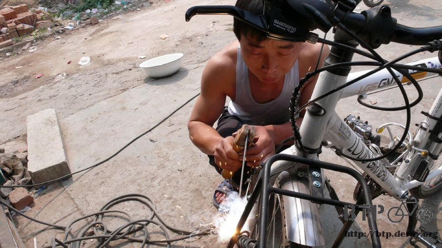
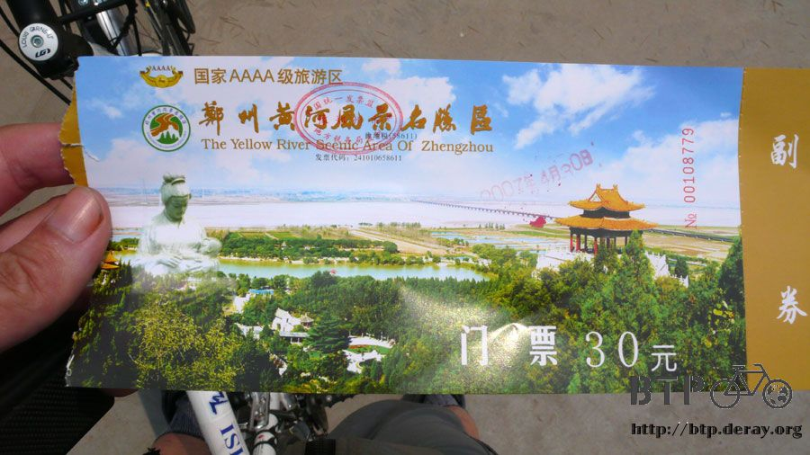
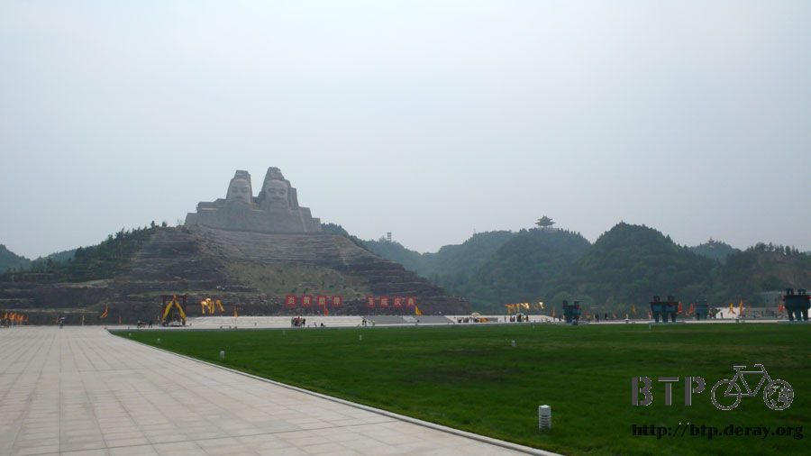
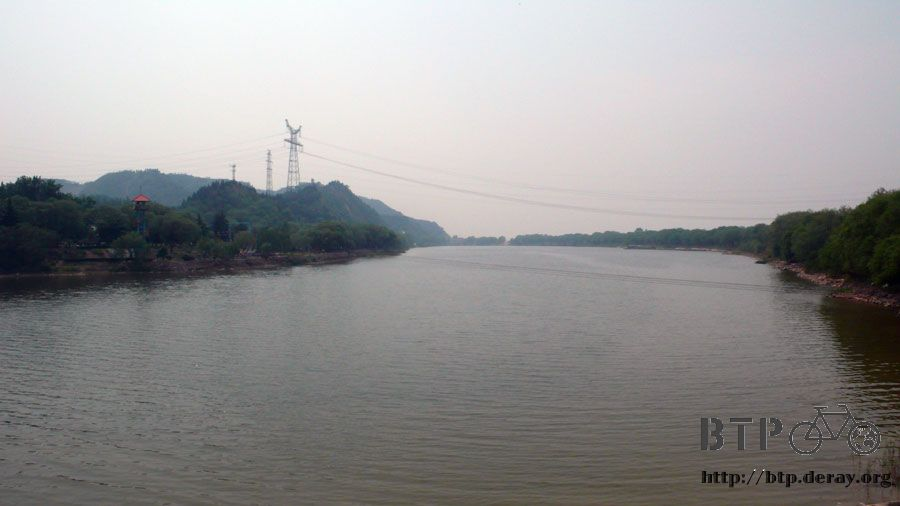
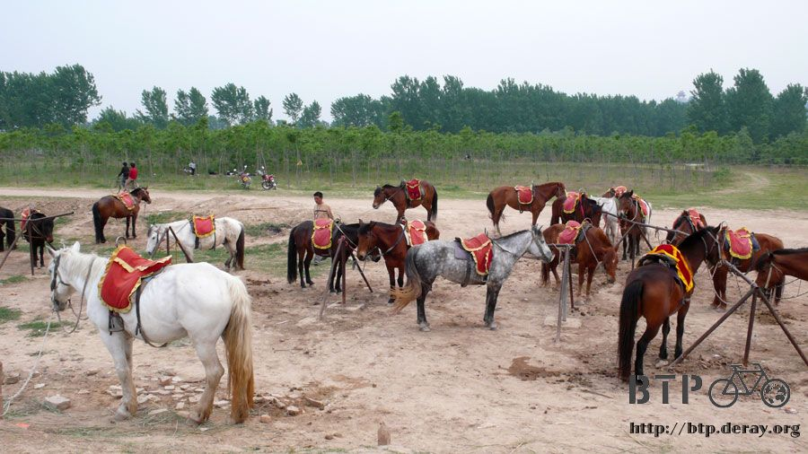
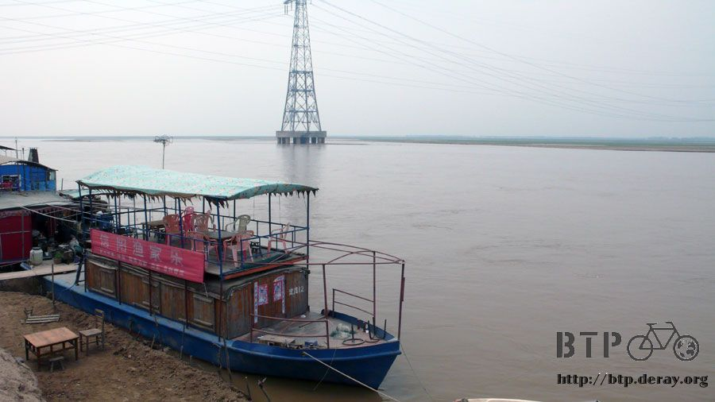
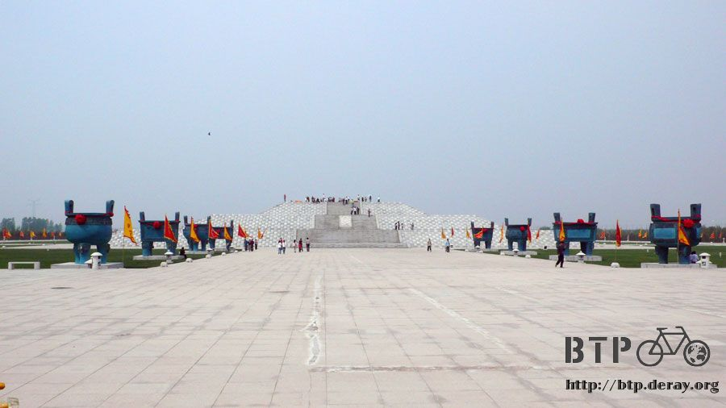
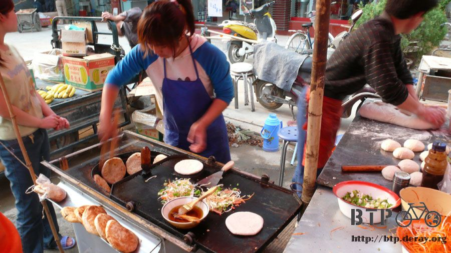
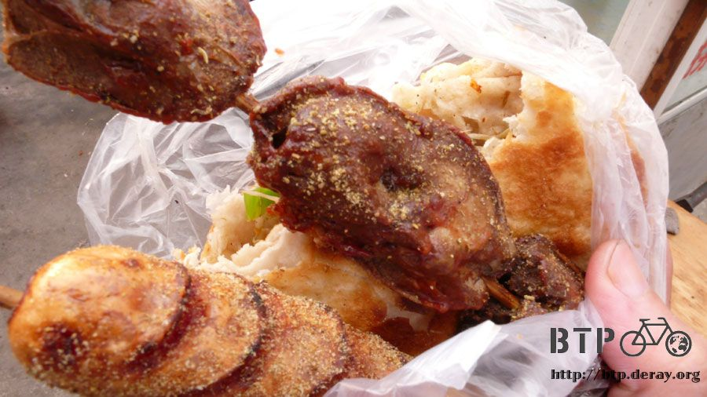

黃河半日遊
大家都準備要上班的憂鬱星期一，卻是我在中國‧鄭州的悠哉星期一。
雖然很想好好睡個飽覺，但生理時鐘在早上五點還是把我的眼睛給打開了。
難得睡到這麼舒服的房間，雖然貴一點，但是真有住高級旅館享受的感覺。
睡醒的時候還恍神了一下，不知道自己身處何方。
那麼早起也沒什麼事情做，那就到樓下去好好的吃一頓早餐吧。
這條街周邊叫做『劉庄村』，旅館很多，吃的店也很多，往樓下一走發現鐵門還沒打開，
看來我是這棟旅館最早起的人了，伸個懶腰打個大哈欠，鼻子聞到飄過來的早餐味。

點了一碗豆漿，和一份四個的炸餅，
炸餅圓圓的，裡面不知道包什麼料，吃起來會有甜甜的味道，
看到大家都在吃像是炸小油條的東西，有點想跟著吃，可是都是一斤一斤的點，份量實在太多了~_~
豆漿端上來的時候，喝一口有點噁，一點甜味也沒有，說是豆汁還比較適合。
看其他人都拿著湯匙自己去舀一匙白沙糖回來攪和一下再喝，我也有樣學樣的跟著做。
悠哉的早餐，不用在路上邊騎單車邊吃那麼辛苦，不用啃乾糧那麼寒酸，結帳時只需要一塊五的超低消費。
上午的時候把小多牽到旅館隔壁的修車行，學外國人講中文模擬河南腔，
跟老闆說我的前貨架有顆螺絲鬆掉了，裡面的螺絲紋路已經磨損，所以鎖不回去，
能不能把這個給焊死？讓它牢固些。
為了以防萬一，連其它七個沒有鬆動的螺絲接合處，也請老闆幫我都焊死，
以防騎到荒郊野外的時候，要是貨架給我斷掉，那這麼多的行李，我可沒辦法背著騎車。
一共要焊接八個點，請老闆幫我估個價。開始裝窮，裝寒酸，看老闆能不能算便宜一點。
結果老闆開價兩塊錢，比我估計的要便宜太多了:D
幫忙扶著小多，讓老闆逐一的把貨架給焊死，這樣算是『破壞性的維修』
因為等我騎到巴黎之後，該怎麼把貨架給拆下來，好運送回台灣呢？
唉，反正是半年後的問題，到時候再煩惱就好，先解決目前的事情比較要緊。

焊接完之後，跟老闆借了盆水和一條布，慢慢的把小多的灰塵擦洗乾淨，
才不過一個星期而已，車身已經佈滿了一層灰，到處都髒兮兮的，仔細的擦洗之後，還小多一個乾淨的原貌。
將遊記存到iPod裡頭，然後跑去網吧上網，便宜的CRT螢幕區，一小時只要一塊錢，
早上沒什麼事情，所以就在這邊消磨了兩個小時，同時也上傳了到29日為止的遊記。
今天是四月三十日，明天是五月一日，在台灣只是一個勞工節的小日子，但是在中國則是五一長假的開始。
幾乎全中國的人都要開始大舉移動，看是要返鄉回家，還是旅行的，這會是一個很忙碌和開心的星期。
只要明天上路的時候，路上不要塞滿了車讓我寸步難行就好了 ~_~
中午十二點半，騎著輕便的小多，只帶了相機和GPS，下午要去黃河風景區溜達溜達。
本來以為很近，結果騎了快一個半小時才到，將近25公里的距離。
差不多從忠孝東路的SOGO騎到基隆吃營養三明治的距離，其實一點也不近~_~
本來只想騎到門口就表示來過了，但因為單車可以騎進去，所以就買了一張30塊的門票進去參觀。
門票說這裡是國家AAAA級的旅遊區，四個A唷！讓我超級期待，結果失望很大/_\

讓各位省下30塊錢，我替大家導覽，只要花五分鐘就可以快速瀏覽完這個四A級的旅遊區。
一進去之後首先會看到石頭上有炎黃祖先的超級大塑像，
是用石頭雕刻出來的嗎？因為紋理顯得太乾淨了一些，

然後有一個很大的景觀湖

養了幾十匹馬，只要花兩塊錢就可以騎馬拍照。

黃河邊有很多很多的小漁船，賣的當然就是黃河裡捕抓的魚。

不知道為什麼放了一架破破爛爛的飛機，讓小孩子爬來爬去的給家長拍照。
寬大的廣場，還蓋了一個平台，周圍都是超大尺寸的古代青銅樂器(應該是吧~_~)

為了緬懷祖先的話，還可以在這邊買香祭祀一下中國人的始祖。
各式各樣的香，從一般正常的，到比人還高的超粗香都有。
逛完啦～我花了三十塊錢就只有這樣 T_T
把我的錢還給我，我要去買三十串鳳梨來吃，
這樣算什麼四個A級的旅遊區呀~"~
早知道騎到門口回去就好了，真是千金難買早知道，還好我只花了30塊人民幣。
回到旅館後洗個舒服的澡，裝備整理一下，明天又要出發了，只是要改往西邊騎，往南的路已經告一段落了。
晚餐再去小吃街尋寶，看到好像很好吃的清真口味烤餅，鐵板下面是炭火的小烤爐，把現揉現擀的餅烤的酥酥香香的。
但是要單買餅還是買有夾料的都可以，夾料的話就會有豆芽菜、紅蘿蔔絲、蔥花、熱狗或是荷包蛋在鐵板上炒一下，然後夾在餅裡吃。
這樣好吃的東西，一個居然也是只要一塊錢。

另外又買了兩串像是鹽酥雞的東西，一串香腸、一串雞肝，總共也才3塊錢。

正滿意的邊走邊吃回旅館的時候，突然響起了轟隆的雷聲。
然後大滴大滴的雨水就嘩然落下，本來還是個晴朗的下午，瞬間就變天了。
好加在只是一場來的急去的也快的臨時雨，不然，在雨中騎車真是一件難受的事情呀@"@
繼續閱讀：5.1 問路的智慧
中國-人民幣－ 1：4.3 台幣
4.30 |
總計：65.5元 |
早餐豆漿＋炸餅1.5元、 電銲補強小多的貨架2元、網吧上網兩小時2元、鳳梨串1元、黃河旅遊區門票30元、晚餐烤餅＋炸串4元、住店25元 |
|